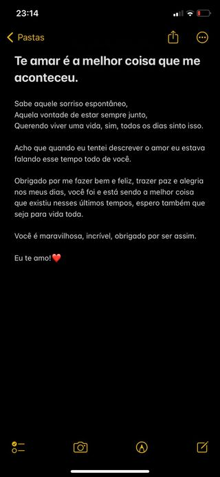

Para mulher mais incrível do mundo [25/03/2023]
meu amor... passando pra lembrar que eu te amo muitooooooooo! e estou sempre aqui com você.
Te amo [26/03/2023]
eu te amo muito, estou morrendo de saudades! não vejo a hora de ver você. Obrigado por ser tão incrível e maravilhosa, você é foda!
Maravilhosa [27/03/2023]
Todos os dias que acordo me sinto o cara mais feliz do mundo por ter você comigo. eu vou estar na sua vida sempre! eu te amo muito, meu amor. eu me sinto mais completo com você do meu lado.
História [28/03/2023]
Cada livro de história existem fatos, fatos relatados de acontecimentos que nos moldaram como sociedade. Eu quero nossas histórias nesse livro que chama-se: vida, pode ser clichê, mas amo ter clichês com você. Quero te amar todos os dias das nossas vidas. Amor, quero ser tuas melhores risadas, abraços e beijos. Eu te amo muito. Amor, não sou Luis XVI, mas perdi a cabeça por você kkkkkkkkk. Obrigado por tanto!
Lembrete Especial [29/03/2023]
Meu amor, como sempre digo e repito: Eu te amo muito! Quero fazer você a mulher mais feliz do mundo. Esse presente é para você dormir feliz e nunca esquecer do quanto eu te amo! Clique aqui: Lembrete especial!
Um café e um amor [30/03/2023]
Não existem sonhos para mim sem você comigo, eu te amo hoje e para sempre. obrigado por ser tão especial na minha vida. Obrigado por tudo! "Um café e um amor. Quentes, por favor. Pra ter calma nos dias frios, pra dar colo quando as coisas estiverem por um fio." Eu te amaria nessa e em outras vidas que existir te amaria tudo de novo. você é meu porto seguro, meu abraço quente e confortável, meus dias de luz, meu motivo de sorrir. Eu te amo. Você é tudo para mim.
Dias [31/03/2023]
Todos os dias eu penso em você, toda hora, todo instante, você me dá forças para que eu prossiga tentando. todos os dias lembra que eu te amo todos os dias eu te amo mais e mais todos os dias eu te quero comigo todos os dias pq os dias nunca terá fim e até lá quero te amar de todas as formas que conseguir...
para a mulher mais incrível que conheço [01/04/2023]
Meu amor, você é a mulher mais incrível que conheço... eu te amo muito, te amo para sempre. continue se mantendo forte, você é brilhante demais, linda, perfeita! Obrigado por existir e ter dado a chance a mim de construir uma vida com você. eu prometo ser diferente de tudo que você já viu, vou te dar o melhor que eu puder. conta comigo sempre. EU TE AMOOOOOOOOOOOOOOOOOOOOOOOOOOOO
Tô com você [02/04/2023]
Estar com você é a maior felicidade... cada momento, cada abraço, conversas e brincadeiras. Te amo para todo sempre, meu amor. Obrigado por me fazer feliz, prometo fazer você feliz sempre.
Você é minha certeza! [03/04/2023]
te ver deitada na cama dormindo me traz boas sensações, pois sei que terei você na minha vida para sempre. eu quero ter todos os dias essas sensações e certeza que você traz para minha vida! obrigado por todos momentos que divido com você. Não existe outra pessoa nesse mundo que eu queira amar, quero apenas você. quero acordar com teus sorrisos, quero ser mimado como vc sempre faz. me desculpa meu jeito emburrado, só gosto da sua atenção. Chris, você vai ser para sempre MINHA!! quero te fazer feliz todos os dias e espero estar conseguindo, quero que seu amor aumente por mim, por nós cada dia que passa. não vou ser um erro na tua vida, vou ser teu maior acerto, eu prometo... tudo que eu puder fazer para ver você bem, irei fazer. o amor é uma coisa que nunca soube explicar até conhecer você. NÃO ESQUEÇA QUE TEM ALGUÉM AQUI QUE TE AMA MUITO, MUITO MESMO!!!
Saudades do meu amor [04/04/2023]
Passando para lembrar mais uma vez que EU TE AMO MUITOOOOOOOO! Estou morrendo de saudades, meu amor. To contando as horas para ter você comigo de novo. dorme sozinho é triste, com você é superdivertido todos os momentos. Saudades!!
Sensações [05/04/2023]
Explicar o que sinto por você nunca terá como, mas vou continuar demonstrando até o fim. Sei que essa TPM é chata pra caralho e mexe muito com você, sei que você está preocupada com diversas coisas, sei que você tem de fazer tudo por todos, mas também quero que você saiba que existe a mim aqui para te ajudar, apoiar, dar amor, fortalecer... Quer um docinho? TOMA! Quer um abraço? TOMA! tudo que você quiser eu estarei aqui para oferecer o melhor, meu amor. Eu estou do seu lado e não importa condições, emoções, vou estar aqui para te encher de amor! vai se cuidando por aí, que amanhã pode deixar quem vai cuidar sou eu, vou mimar 3x vezes. eu te amo muito e para todo sempre, sempre que quiser falar algo aciona no zap zip. estou aqui com você para todo sempre, será que você tem noção que esse magrelo vai tá aqui para te dar carinho, amor, beijo, mimos, tudo de bom e o que você merece. VOCÊ É MARAVILHOSA, LINDA, ESFORÇADA, INTELIGENTE, DEDICADA, GOSTOSA, MEU ORGULHO, MINHA VIDA, MEU AMOR TODINHO, MINHA HISTORIADORA GOSTOSA, MINHA PRETA, MEU TUDO, EU TE AMOOOOOOOOOOOOO!
Finalmente [06/04/2023]
Estamos juntos de novo, finalmente... tava demorando demais pra você voltar. dois dias longe de você parace décadas, mas quando você vem meus dias tornam-se coloridos, alegres, é como um rasbico tornando-se uma obra de arte. eu te amo para sempre e não canso de te falar isso. desculpa minha falta de compreensão juro que estou tentando melhorar, entender mais como funciona as coisas, não queria ser rude com você, lhe chatear, eu te amo demais pra perder tempo com isso. Enfim, quero dizer que eu te amo muito e minha vida só tem sentido quando estou com você.
Meu aniversário [07/04/2023]
Um dia para meu aniversário e o meu maior presente foi você. Eu te amo para todo sempre!
Parabéns [08/04/2023]
Eu te amo muito. Tenho a certeza que você é minha maior escolha!! Todas às vezes que desacreditei do amor, mudou quando você chegou... Fogueira sem brasa e avião sem asa, sou eu assim sem você, sem você não existe mais eu. se tornasse uma parte de mim e todos os dias só aumenta, obrigado! só de falar de você meu corpo, coração fica em alegria. Hoje de todos os presentes, você continua sendo o melhor que já tive e vou valorizar você sempre. obrigado por tornar esse dia mais especial. tenho certeza que todos os anos será assim, minha vida será sempre assim, com você tudo é especial, tudo é demais, eu te amo muito! nosso amor sempre vai ser o que perpetua, obrigado. Hoje é meu aniversário, mas esse texto é para parabenizar a grande mulher da minha vida... Você! Te amarei para todo sempreeeeeeeeeeee!
PARA SEMPRE!!!!!!!! [09/04/2023]
Não importa quantos os dias passem... meu amor por você só aumenta. te agradeço por todas sensações que estás me fazendo sentir, amor. todo dia eu agradeço por ter encontrado você, achei que nunca amaria de verdade, sentiria a sensação do REAL AMOR. Obrigado por permitir eu fazer parte da sua vida, sei que era difícil pra você, mas eu vim mostrar tudo diferente e mostrar que você merece o mundo, meu amor. você merece tudo de bom, TUDO! Eu escrevo esse lembrete emocionado porque nunca esperava sentir essa sensação. Chris, amor, princesa, eu prometo todos os dias ser o homem melhor por nós, pelas pessoas que nos rodeam. Quero fazer você feliz, quero que sua mãe saiba que você está com um cara que realmente vai fazer a filha dela a mulher mais amada do mundo! Nunca vou te decepcionar, sempre vou deixar claro tudo, nunca vou esconder nada, até porque não deve esconder nada da minha melhor amiga. Obrigado. Para sempre eu estarei aqui e cada dia vou buscar evoluir, pela gente, pelos nossos filhos que um dia vão chegar, pelo nosso casamento que um dia vai chegar, no momento estamos constuindo nossa base e tenho certeza que será uma base bem estruturada, pois VOCÊ É UMA GRANDE MULHER e que MULHER, tenho muito ORGULHO DE VOCÊ!! Amor, não esqueça que tem um magrelo que te ama muito, passaria horas escrevendo, mais nunca será suficiente para descrever toda sentimento que você trouxe e traz a minha vida. EU TE AMOOOOO!
Todo dia terá ![10/04/2023]
Te encontrar foi reencontrar o amor. Desde que olhei você naquele dia senti algo inexplicável, uma sensação boa e agora todos os dias sinto esse momento novamente. Nem toda poesia escrita, nem toda palavra no dicionário e nem todo lembrete vai descrever a sensação que sinto quando te olho. Você chegou tão repentinamente, mas está me fazendo um cara mais feliz, mais amado. E pode ter certeza que quando digo a você que vou fazer você é a mulher mais feliz do mundo, é verdade!! Você merece tanta coisa boa e talvez você não tenha noção disso, mas vou fazer o máximo para mostrar diferente. Em meio a tantas dúvidas, você foi minha certeza. Nunca pensei em retroceder na minha decisão e por isso hoje posso sair dizendo que você é MINHA NAMORADA. Saiba que serei teu amigo! você pode me contar todos teus medos, inseguranças e vou estar aqui para ajudar da minha melhor forma, ok? Nem todas palavras que tentei expressar vai descrever todos meus sentimentos, mas consigo escrever um pouco para mostrar para você eles. Esses lembretes são formas de demonstrar meu amor e fazer você ter noção que tem um cara que te ama muito e está com você sempre. Lembretes são para lembrar de algo, por isso estou lembrando todos os dias o quanto eu te amo, meu propósito é sempre trazer alegria na sua vida e das pessoas que você ama. Se um dia eu vencer pode ter certeza que as nossas famílias vencerão também. Não são apenas palavras é meu coração falando, minha alma expressando. Nossa família vai ser feliz, vou proporcionar a elas o melhor que puder! Eu quero fazer você e todos feliz e vou conseguir. seus lembretes são para registrar minhas promessas e você ter certeza que tornou-se realidade, todos nossos sonhos escritos nesses lembretes. Nossos lembretes, nossos sentimentos,nossas sensações, tudo estará registrado e quando casarmos e conseguirmos conquistar nossos sonhos... lembraremos de tudo isso! Eu te amoooooooo!
Você [11/04/2023]
meu amor... eu te amo de todas as formas, jeitos e manias, obrigado por tudo. Você entende a relatividade quando vê que uma hora com a sua namorada parece um minuto, e um minuto sentado num formigueiro parece uma hora.
Notificação de lembrete [12/04/2023]
Meu amor, continue sendo essa mulher esforçada e dedicada que você é. todos os dias é motivo pra ter orgulho de você, eu te amo muito. quero que você saiba que você é a mulher mais incrível e inteligente que conheço, obrigado por me inspirar todos os dias. pode contar comigo para todas as coisas, quero ser alguém que vai somar na sua vida e seu crescimento. eu te amo, obrigado por tudo!! Feliz DOIS MESES!!!!!!!
Te amar. [13/04/2023]
Você é meu sol em um dia nublado, meu sorriso em um momento triste, meu refúgio em um mundo agitado, minha paz em meio ao caos que existe. "Amor é um enigma que nos faz sonhar Amor é um enigma que nos faz sonhar, é uma luz que ilumina a escuridão, é um mistério que nos faz amar, é uma paixão que move o coração." te amar é ser feliz de várias formas, te admiro muito, admiro seu jeito, sua inteligência, obrigado por me fazer tão bem e feliz. seu amor é a paz pro meu coração, eu te amo para todo sempre!
Cosquinha não [14/04/2023]
Fala, meu amor eu te amo muito!! Obrigado por tudo que você vem fazendo minha vida ser mais alegre, mais feliz. eu te amarei de todas maneiras que existerem, sempre estarei aqui de braços abertos para ser teu abrigo, você merece o melhor dessa vida! Eu te amo muito!!!!!!! "Minha vida é uma música e você é a letra mais bonita que já ouvi." "Não há nada como o amor, não há nada mais importante, não há nada mais gratificante, não há nada mais necessário na vida do que o amor."
Sou feliz contigo do meu lado [15/04/2023]
não tem coisa melhor nessa vida do que acordar ao lado de quem a gente ama... e quero sentir essa sensação para todo sempre. eu e você é uma dupla imbatível, algo que nunca existiu antes, somos maravilhosos separados, mas muito mais incríveis juntos. vou estar aqui sempre para te ajudar, apoiar, beijar, abraçar! eu te amo muitao, meu amorzao, minha vida. você me faz sentir um cara mais completo e feliz, eu te amo demaissssss! obrigado por tudo!
Vou apenas escrever [16/04/2023]
cuidar de você é o que mais quero fazer durante nosso relacionamento, o máximo que eu consegui! quero te encher de sentimentos bons que preenche a alma, pois é importante sabermos que ainda existe alguém que quer nosso MELHOR, NOSSO BEM (isso que espero transmitir pra você) me desculpa pelos meus defeitos, sou sujeito a erros, mas nunca um erro que vai te magoar e sim erros bobos do dia-dia, sei que sou um mano muito cabeça dura, mas estou tentando melhorar todos os dias... sei que você odeia quando peço desculpas, mas é necessário para eu enxergar meus erros e reconhece-lôs, então: me desculpa pela minha atitude de ontem, pela forma que tratei você, não me orgulho disso, mas estou tentando melhorar, por mim e por nós. meu amor, você é a pessoa que mais me importo nesse mundo e não quero desperdiçar nenhum momento de nossas vidas. Obrigado por me moldar, você me ajuda a ser um HOMEM melhor, uma pessoa melhor e espero que eu consiga ser. você é a mulher mais linda que existe de todas as formas, quando acorda, se arruma, com raiva, chorando, feliz, você é linda de todos os jeitos. amo você inteira. continua buscando, meu amor, você vai continuar crescendo tornando-se cada vez mais uma grande mulher (te admiro). eu passaria horas escrevendo pra você e por isso que os lembretes existem, para escrever e por para fora meus sentimentos sobre você e nós. quero fazer teu corpo vibrar, tua alma se alegrar, quero ser o melhor na sua vida e sempre vou buscar isso. para finalizar: eu te amo muito e para todo sempre te amarei. dizem que gatos tem 7 vidas e nas minhas sete quero amar você minha gatinha. eu te amo.
Sempre você [17/04/2023]
SEMPRE VOCÊ me arranca as melhores risadas SEMPRE VOCÊ me arranca os melhores sorrisos SEMPRE VOCÊ me traz paz, para sempre você será a mulher da minha vida. amor, todas às vezes que escrevo sobre a gente me sinto tranqulizado, pois nosso amor é paz para minha alma. você para mim é o arco-iris pós chuva. vou continuar correndo pela gente, por mim, por nós... quero te trazer paz, quero te dar abraços, beijos, eu te amo!!!!!! você é a mulher mais incrível desse mundo e todos os dias quero deixar bem claro isso! você é a melhor pessoa desse mundo, meu amor. quero estar sempre contigo. minhas promessas irei realizar uma por uma e você sabe disso! EU TE AMO. Lembre-se: seus lembretes são formas de eu externar todo meu amor que nem cabe no meu peito, quero te dizer que: para sempre eu farei coisas para mostrar o quanto eu te amo e você é importante na minha vida. obrigado por ser você!
Saudade já bateu na porta [18/04/2023]
Bastou você passa pela porta que meu peito apertou ainda mais, chamam de saudade, saudade é a coisa mais chata que você pode ter quando se gosta da companhia de alguém, ainda mais quando ama a companhia de alguém. tenho esses sentimentos todas às vezes que você tem que ir embora... quando ama alguém como eu te amo é difícil ter que aceitar essas rápidas despedidas, é como o Scooby-Doo sem o Salsicha, Patolino sem Pernalonga. Você é minha companheira que aguenta minhas chatices, minhas idiotices, topa minhas loucuras e por isso é ainda melhor ter você por perto. eu tinha muitos amigos, na verdade, eu tenho amigos, mas hoje você é minha namorada, minha amiga e meu amigo. eu te amo e espero que entenda o motivo de eu odiar saudades e despedidas, simplesmente porque ficar longe de você me faz odiar tudo isso.
Hoje vou ser objetivo [19/04/2023]
você é tudo que eu mais queria aqui agora, estou morrendo de saudade. EU TE AMO MUITAO!!
desculpa [20/04/2023]
estou morrendo de saudade. desculpa por não ter visto você hoje, era tudo que queria prometo que vou fazer de tudo para lhe ver amanhã, eu te amooooo!
erros [21/04/2023]
hoje falei muitas coisas do meu coração para você. sei que somos sujeitos a erros, mas como te falei quero ser o melhor para nós dois sempre. meu mundo não gira em torno de mim e sim de nós, pois só penso em você, só quero você e nada mais. você é meus melhores momentos e sorrisos, tudo! Obrigado por me fazer um cara feliz, alegre e um homem melhor. como eu te disse: você é a mulher mais incrível que tive a sorte de conhecer e tornar a minha namorada. eu te amo muito obrigado por TUDO, desculpas. você é o meu maior orgulho e quero cada dia ser o melhor para nossa relação
to muito felizzzzzzzz [22/04/2023]
eu sou o cara mais feliz do mundo em ter você na minha vidaaaaa. é muito bom essa sensação de amar o amor da sua vida. eu quero construir a melhor história da sua vida do seu lado, escrever a minha e sua história para sempre juntos. obrigado por me fazer bem, quero te dar o mundo e outros planetas. você é a mulher mais foda do mundo, seja sempre assim, meu maior orgulho, encho a boca para falar da mulher maravilhosa que namoro. EU TE AMOOOOOO! VEM AQUI ME DÁ UM BEIJO QUANDO LER.
Em todas vidas que existir, será você [23/04/2023]
Meu amor, digo e repito: não importa o quanto eu escrever eu jamais vou descrever todo sentimento e sensação que sinto em ter uma mulher igual você na minha vida. Quero estar com você nos seus risos e choros, vitórias e derrotas porque faz parte da vida altos e baixos (A gangorra representa bem isso, uma hora estamos no alto e outra em baixo e se estivermos sozinho numa gangorra ficaremos no chão para sempre por isso eu estou aqui também para sentar na gangorra e te fazer crescer mais e mais.) Você é a mulher mais inteligente do mundo eu amo tudo que você fala e ensina para mim, gosto muito quando você dedica um tempo seu para ensinar algo, você me ajudou a me reconhecer, me amar, me sentir bem comigo mesmo, perder meu medo de ser EU. Na sua vida eu quero ser teus maiores sorrisos, suas gargalhadas mais gostosas, seus choros de alegria, chega de decepção de gente filha da puta que NUNCA deu o merecido valor para uma mulher tão incrível que você é... Dito isso: foda-se todos que um dia te fizeram se sentir menos, você merece mais, pois você é mais. Mais gostosa, mais inteligente, mais feliz, mais maravilhosa, mais incrível, você é a melhor que existe e não existe outra pessoa nessa vida que eu queira viver, há não ser com você. Você é minha dose de dopamina, você é minha paz, meu conforto, meu abrigo. Sei que sou cabeça a dura às vezes, reclamo muito, falo muito, mas eu quero muito cuidar de você e talvez minha forma de cuidar seja chata às vezes, mas eu não quero ter a chance de perder você! Minha preta, quero ter você comigo sempre, odeio quando você tem que ir embora para sua casa, sim eu detesto ficar longe de você. Eu quero ficar contigo, fazer minhas graças juntos com você, assistir nossos filmes, passar horas decidindo algo, pois simples momentos com você são os mais grandiosos. Obrigado por me moldar a ser sempre um homem melhor, obrigado por caminhar comigo, obrigado por me fazer bem e cuidar da minha família, obrigado por ser você, sempre ser você e nunca fingir nada! Eu te amo demasiadamente, não existe nada que explique meu amor por você! Eu te amo muito, quero te agradecer por tudo, obrigado por me fazer feliz, ok? Saiba que para sempre cuidarei de você, eu te amo muito. Vou cuidar não só de você, mas da sua família, eu quero ver sua família bem e meu amor: eu e sua mãe temos o maior orgulho de você e foda-se se aquele babaca do seu pai não reconheceu isso: você será grandioso ainda mais em tudo que você almejar, você é dedicada e admiro muito! Cada passo que damos para nossa felicidade é um motivo de me fazer feliz e continuar lutando para ser o melhor por nós. Vou te mimar sempre, comprar presentes sempre, dar carinho sempre, ser safado sempre e não importa QUANTOS ANOS PASSAR ISSO NUNCA MUDARÁ, NUNCA!!!!!!!!!!!
te amo momo [24/04/2023]
acho que existem coisas que acontecem para nossas vidas tornarem-se mais vivas. tipo aquele seu joguinho de pintura, quando está em branco é vazio, mas você vai preenchendo e vai ficando cada vez mais bonito e colorido, pois é essa sensação que você traz e trouxe quando chegou. amor, acho que não tenho sonhos com você, tenho certezas. não sonho em casar com você, tenho certeza de que vamos casar;
não sonho em ficar pra sempre com você, tenho certeza que ficarei para sempre com você. eu sempre tentei escrever sobre o amor de diversas formas, mas como escrever sobre amor quando nunca foi amado de verdade? hoje eu escrevo sobre amor com convicção, pois tenho certeza de que você diz tudo sobre o amor, sobre amar. todos esses lembretes, todas essas paradas, é o mínimo perto da grandiosidade das coisas que você merece.
Com amor, Grabiel.
várias formas [25/04/2023]
hoje quero te dizer algo simples em formas diferentes
Inglês: I love you
Espanhol: Te quiero / Te amo
Francês: Je t'aime
Italiano: Ti amo
Alemão: Ich liebe dich
Japonês: 愛してる (Ai shiteru)
Chinês: 我爱你 (Wǒ ài nǐ)
Coreano: 사랑해 (Saranghae)
Russo: Я люблю тебя (Ya lyublyu tebya)
Árabe: أحبك (Ana uhibbuka)
Hebraico: אני אוהב אותך (Ani ohev otakh)
Hindi: मैं तुमसे प्यार करता हूँ (Main tumse pyaar karta hoon)
Grego: Σ' αγαπώ (S'agapo)
Turco: Seni seviyorum
Polonês: Kocham cię
Húngaro: Szeretlek
Tailandês: ฉันรักเธอ (Chan rak ter)
Indonésio: Aku cinta kamu
Sueco: Jag älskar dig
Norueguês: Jeg elsker deg
Dinamarquês: Jeg elsker dig
Islandês: Ég elska þig
Finlandês: Rakastan sinua
Holandês: Ik hou van jou
Português: Eu te amo
existem várias formas de dizer eu te amo e eu quero poder te amar em todas as formas que existerem, você é tudo para mim!!
não sei escrever [26/04/2023]
lembretes: são formas que encontrei para expressar esse sentimento bom que existe aqui com você na minha vida. não são apenas palavras jogadas, são sentimentos expostos para que você entenda que eu te amarei para sempre, não apenas hoje, amanhã, por meses, mas sim por uma vida toda e em outras se existirem. eu criei toda essa coisa de lembretes para expor o como é bom amar você, o quão você é uma pessoa maravilhosa, eu quero fazer você enxergar que além de ter te amar muito, quero fazer você enxergar o quão maravilhosa você é. sim... sei que já falei as mesmas coisas todos lembretes em formas diferentes, mas é isso que nos torna tão felizes, esse hábito de inovar no amor, sempre demonstrar nossos sentimentos. te amar é algo gigantesco e eu não saberei explicar o quão bom é. enfim, quero te dizer em apenas uma língua que eu te amo para todo sempre e não existe nada nesse mundo capaz de mudar todo meu amorpor você. você é importante para minha vida e para todo sempre.
Meu próposito é mostrar para você que existe alguém que te ama e admira muito, obrigado por me fazer tão bem, sou eternamente grato por tudo
mais uma vez falando sobre saudades [27/04/2023]
é muito bom ter sua companhia e fazer todas nossas loucuras juntos, estou morrendo de saudades de você... talvez eu esteja um pouco desacostumado, pois é maravilhoso o que temos, obrigado por me fazer tão bem e feliz, te amo muito!!!!!!!!
hoje foi muito bom nossas gargalhadas [28/04/2023]
meu amor, você a melhor parte do meu dia, meus melhores momentos são do teu lado, não vejo minha vida sem tê-la comigo. obrigado por ter me dado a chance de entrar na sua vida, prometo que farei tudo para tirar as melhores risadas e momentos com você. Eu te amo tanto que não cabe no meu peito. Hoje foi muito bom ficar deitado contigo dando várias gargalhadas eu adoro de olhar nos olhos, adoro ver teus sorrisos, você é linda demais, tudo em você é maravilhoso. Eu te amooooooooo!
viajar com você, viajar em você [29/04/2023]
Eu te amo de todas as formas. essa viagem está sendo maravilhosa porque tenho você comigo pra dividir essas bobagens, te amo muito! obrigado por me aturar e me fazer tão bem, me dá um beijo
sem sexo, mas com muito amor [30/04/2023]
amor, tudo que falo, brinco, é sempre para irritar você. você irritada é muito linda, eu te amo muito. desculpa minhas bobeiras, minhas mancadas, meus estresses, mas quero te dizer que eu te amo muito. quero fazer seus dias serem os melhores e está sendo muito maravilhoso viver todos momentos contigo, eu te amo demaissss, tenho nem outras palavras para descrever tamanho amor. quero te dar tudo que você merece. obrigado por me aturar, me aguentar e me fazer feliz!!
enfim... em casa [01/05/2023]
Chegamos em casa, é sempre bom chegar em casa... mas não importa pra onde vou meu abrigo é você, a questão não é chegar em casa é ter você comigo. do que adianta viajar e não ter meu abrigo e refúgio comigo? do que adianta chegar no meu quarto sem minha melhor companhia? não é sobre ir, chegar, é sobre ter você me acompanhando em todos os momentos e para mim é uma das coisas mais importantes que ganhei na minha vida e nunca mais quero perder. você é a mulher mais gostosa, mais linda de todo planeta e mundo, eu te amo!!!!
oi, momo [02/05/2023]
Obrigado por essses momentos que você me proporciona, eu quero estar a teu lado para todo sempre!! eu te amo muitoooo, gostosa! você é a mulher mais incrivel do mundo, sou mt grato por ter você.
sou teu grude [03/05/2023]
eu te amo muito, meu amor, obrigado por tudo que você. estou morrendo de saudade de você, ficar longe de tu é um desafio por mim ficaria com você grudadinho para sempre!! obrigado por me fazer o cara mais feliz do mundo, vou fazer de tudo pela gente sempre, pode ter certeza!! eu te amoooooooooo momo, saudades demaissss!
saudade bateu na porta não, arrombou [04/05/2023]
Oi, momo. morrendo de saudades aqui ainda, acordar tem sido chato sem você aqui... acho que somos melhores sozinhos e incríveis juntos mesmo, não há outra explicação. mesmo de longe saiba que eu te amo muito, quero te ver bem, mas te quero perto de mim, te quero comigo grudadinha. Quero te falar que eu te amorse muito e nada nessa vida vai mudar meu amor por você e isso é só uma parte que posso demonstrar através desses bilhetes eu te amo muito, preta!
você é a mulher mais linda do mundo, momo [05/05/2023]
nunca vi uma mulher tão incrivel e maravilhosa como você, momo. você é incrivel, linda, esforçada, dedicada, um exemplo de mulher!! uma mulher que merece o mundo, na verdade, merece tudo que há de melhor. eu quero te dar os melhores sentimentos que você possa sentir, quero ser uma grande pessoa na sua vida. sempre pensa: "eu sou a mulher mais foda do mundo, mais incrivel!", não deixa ninguém desmerecer você nem seus sonhos. você merece as melhores coisas da vida!!! Você é uma mulher forte e corajosa, e eu tenho sorte de estar ao seu lado. Presente: Clica
pegadinha [06/05/2023]
vou dormir ai
Ficar com você [07/05/2023]
Ficar com você é a melhor coisa que acontece nos meus dias é uma felicidade inexplicável que sinto quando estou perto de você. Obrigado por me fazer um homem mais completo, mais feliz, alegre e um grande homem. eu te amo para todo sempre, meu amor! to com saudades... te amo!!!!
enigma [08/05/2023]
. ..- / - . / .- -- ---
nos teus braços [09/05/2023]
não há nada nessa vida capaz de acabar o que existe toda vez que te olho, a sensação de ser amado, de amar, de querer e zelar pelos nossos sentimentos. te amar é muito mais que um sonho é a certeza de que estou com o amor da minha vida ao meu lado e espero retribuir todo esse sentimento que você me causa. te amo hoje e para sempre!
Longe de tu = saudades [10/05/2023]
Muita saudade de você, meu amor, quero agradecer a você por estar sempre comigo! estou morrendo de saudades de você e estou louco para te ver... você é tudo para mim, te amo, te amo!
vários [11/05/2023]
Vários lembretes escritos, vários sentimentos expostos, é o que há... muito amor muita luz, muito carinho e felicidade para todos nós!! eu te amo muito e vamos ser para sempre felizes!
não quero viver apenas meses e sim uma eternidade [12/05/2023]
+1 mês ao lado do meu amor... obrigado por me fazer feliz, trazer um significado maior na minha vida. eu quero agradecer por todo tempo que estamos construindo juntos é muito importante saber que estou construindo um futuro com o amor da minha vida! eu te amo muito meu amor, com certeza só um cara mais feliz do seu lado, você é muito incrivel, parece um sonho de tão maravilhosa, eu te amooooo!
você é a melhor coisa na minha vida, eu te amo [13/05/2023]
A cada dia que se passa eu te amo cada vez mais e quero estar com você eternamente do meu lado, eu te amo mais que tudo nesse mundo você é a mulher mais incrível desse mundo e cada dia que passa tenho mais certeza disso, fiz a minha melhor escolha em ter vocêna minha vida! quero te agradecer por tudo que você fez e faz por mim, significa muito ter alguém tão maravilhosa na minha vida é massa demais. eu quero passar todos os dias da minha vida contigo e fazer você feliz. te amooooooooooooo!!!
surtei [14/05/2023]
Tenho certeza que você foi o meu maior, você é o grande amor da minha vida. Eu te amo muito e tenho certeza que todos sentem orgulho da mulher incrível que você é. eu te amo muito, obrigado por ser o melhor presente da minha vida toda, você é maravilhosa, meu Deus eu quero te beijar muito agr que saudade da porraaaaaaaaaa, o lembrete é esse aaaaaaaaa que saudade, vo meter porrada nessa distância
espero que vc fique melhor [15/05/2023]
sei que de longe não posso fazer muita coisa, mas eu fico preocupado com saudades, aperriado... mas estou aqui sempre de alguma forma eu te amo muito meu momo, to morrendo de saudades de você.
mais um lembrete sobre saudade [16/05/2023]
estou morrendo de saudade, quero sua companhia, preciso dela. saudades quando estava com você sempre enchendo de beijos, fazendo besteiras, assistindo, fazendo tudo, eu amo estar com você e para mim isso é torturante. é difícil estar longe de quem amamos. talvez eu invente o teletransporte para matar minha saudade sempre que ela bater na porta... eu te amo muito, você é maravilhosa, estou com saudades e louco para te ver.
quero ter vc todo dia, vou te sequestrar [17/05/2023]
seu eu pudesse estaria todos os dias contigo, pois é muito bom tá contigo. to morrendo de saudades... eu te amo e todo dia que passa e estou longe de vc é mais saudade no meu peito. obrigado por tanto e por tudo!
quero tu, quer beija [18/05/2023]
SAUDADES, SAUDADES, SAUDADES...Todos lembretes ultimamente se resume a isso, infelizmente... estou doido para te ver, amo estar contigo. te beijar, te amar, te dar carinhoe e longe é mesmo que nada... VEM MOMO, VEM MOMO, VEM MOMO, TE AMO TE AMO TE AMO TE AMO P SEMPREEEEEEEEEEEEEEE
esqueci o lembrete [19/05/2023]
esqueci o lembrete, mas o lembrete começou a partir do momento que você chegou aqui para ficar comigo, pois os lembretes são isso nós, nossos sonhos e nossas invenções, eu te amo e obrigado por ficar comigo.
amar você [20/05/2023]
amar você é a canção mais bela do Bruno mars, o dia mais lindo, o pôr do sol... amar você é uma grande arte que ninguém saberá explicar, pois você é inexplicável, incrivel, eu te amo muitoooooo!
1 semana [21/05/2023]
felicidade em meu rosto quando lembrei que irei ficar contigo 1 semana, mas pensando maior meu sorriso abriu ainda mais quando lembrei que ficarei o resto da minha vida! é muito bom saber que acordarei e verei essa mulher maravilhosa do meu lado, dividindo meus sonhos e desejos, é muito por ter você comigo, minha vida é muito mais alegre e feliz contigo. então não quero que seja apenas 1 semana e sim a vida TODAAAA!
acordei com meu momo [22/05/2023]
Acordar com meu momo é a melhor coisa que pode acontecer no meu dia, é maravilhoso, obrigado por me fazer tão bem e feliz. amor, quero dizer que eu te amo muito e todos os dias só tenho mais e mais certeza disso, esse sentimento que você me transmite, a paz que você me traz é muito bom. Como te falei: é ter a paz no coração em saber que estou construindo nosso futuro com o amor da minha vida!!
breve [23/05/2023]
te amo mais que tudo nesse mundo. toda hora, minuto, toda vida eu quero te amar
te amo momo [24/05/2023]
Te amo muito. Obrigado por todos os momentos que você está tendo comigo. se for vivermos assim, vamos viver pra sempre. é muito bom, muito, muito. te amooooooo!
LEMBRETES = EU TE AMO [26/05/2023]
O que falar de você? já escrevi tanto sobre você, sobre nós e sempre acaba resultando no mesmo sentimento em formas diferentes, pois o amor é um misto de sensações e sinto todos os dias... Amor, quero começar falando que eu te amo e sei que em todos lembretes está bem claro que eu te amo, mas vou reforçar eu te amo e amo muito. Você é uma menina espetacular, acho que você é um belo filme que ainda não criaram, uma música ainda não escrita. Vou falar um pouco do que sinto: Quando eu estou com você eu me sinto muito feliz, alegre, meus dias ficam mais coloridos que nem ceral Froot Loops. O que tudo isso resulta = Que eu te amo. Não importa quantas palavras eu tentar escrever o resultado será o mesmo sempre. Obrigado, meu amor, por me permitir fazer parte da sua vida dos seus sonhos e planos, pois sei que significam muito para você. Vou dedicar algo: Compreendo. Aqui está um poema de amor profundo de um autor conhecido: "Amar é a eterna melodia Que embala corações apaixonados, É o fogo que queima em cada dia, E os sentimentos que nunca são findados. É a voz suave que acalma a alma, O toque suave que cura a ferida, É a dança perfeita, a sutil calma, E a certeza de uma vida compartida. É a poesia escrita com ternura, A harmonia que envolve os seres, É a certeza de uma eterna aventura, O encontro de duas almas tão sinceras. Amar é o presente mais precioso, A dádiva que o destino nos concede, É o laço que nos mantém unidos, E a razão pela qual o amor não fenece. Nas palavras deste poema me entrego, Expressando o amor que em mim floresce, Pois em ti encontrei o meu abrigo, E em teus braços, o amor que me aquece." Eu sou muito feliz contigo, minha vida faz muito sentido agora, sou um grande homem e você está me fazendo ser o melhor de mim a cada dia... Por nós, pelos nossos filhos, pelo nosso relacionamento, por tudo que há de melhor reservados para nós. Enquanto eu existir, meu amor, você terá colo para deitar, abraço para confortar, risadas para dar, choros para eu enxugar... Enquanto eu estiver aqui você estará protegida, pode ficar confortada, pois cuidarei do seu coração como um Cardiologista. EU TE AMO!
te amo amo amo [27/05/2023]
tô aqui ouvindo você e tendo a certeza que você é o amor da minha vida. você é a coisa mais linda conversando, revoltada, de todo jeito. você é tudo pra mim. Te quero para sempre comigo, vou te fazer feliz para sempre!
é, lembretes de saudades vão voltar... [28/05/2023]
já estou pensando quando você for embora... ficarei mal acostumado. eu amo sua companhia, amo estar com você... por mim você ficaria sempre que quiser, não quero ficar longe, or! te amo, momo e já to morrendo de saudades.
vc se foi e... [29/05/2023]
saudade que restou tristeza p hoje.
amor, venha pra cá [30/05/2023]
fazer as coisas sem você é sempre chato, tedioso... que saudade de você! eu te amo muito, quero você aqui comigo... para rir, assistir, jogar, sei lá. só quero você, te amo, quero te ver logo.
você estava linda [31/05/2023]
Hoje você estava a coisa mais linda do mundo e te ver assim me deixou apaixonado. O aniversário foi de Raquel, mas você está de parabéns. Eu te amo coisa linda, não vejo a hora de ver você novamente. Saudades!
longe de você [01/06/2023]
eu te amo muito, meu amor. Desculpa meu estresse. eu ando muito atacado tem muita coisa pra fazer, gente chata no meu ouvido e eu só quero estar deitado no seu colo, agarrado, beijando, eu morro de saudade de você. Quero tá contigo p sempre, morar ctg, casar, eu não aguento mais ficar longe de você
te amar é pra sempre [02/06/2023]
te amo muito e não importa a circunstâncias que apareça eu sempre estarei aqui do seu lado. não quero você agora e amanhã, quero para sempre.
poesia.txt [03/06/2023]
faz tempo que não escrevos poesia, faz tempo que não via finalidade em escrever textos, minhas ultimas poesias escritas era apenas decepção, frustação, mas você mudou tudo isso ao chegar, foi a calmaria na agitação do meu coração. meu amor, eu não me acho tão bom usando palavras, porém tudo que eu escrevo vem da minha alma, tudo que eu escrevo é minha intensidade, sou eu... então, quero avisar algumas coisas aqui: quero te dizer que minha vida tem mais significado agora, eu me encontrava um tanto quanto perdido um explorador sem um mapa, mas você me mostrou um caminho, um sentido. Outra coisa é a seguinte: não existe apenas eu, existe nós e para sempre será assim. Não quero promessas falsas, sentimentos rasos, quero te mostrar que sou um grande homem, quero ser o teu super-homem, teu homem-aranha, como sempre disse: quero ser um homem que te inspira, te salva, que oferece réfugio. Me desculpa se às vezes eu não faço as coisas como planejo, como combino, perdão pelos meus estresses, minhas chatices, perdão se te magoei alguma vez, estou tentando melhorar... não quero culpar ninguém, eu que errei em deixar as coisas correrem dessa forma e acaba frustando nossos combinados, mas quero ser mais preciso, verdadeiro quanto nossos planejamentos, me desculpa se eu falhei. amor, eu lembro quando eu desacreditei que existia um sentimento igual esse que sinto quando com você do meu lado, eu me sinto incrivel, me sinto amado, acolhido. Toda vez que te olho eu me sinto apaixonado, amado, acolhido, feliz! Obrigado por me transmitir tantas sensações maravilhosas, eu estou me tornando um grande homem por cauda de você, você me ajudou tanto e nem sabe disso. Você é um grande exemplo, uma grande mulher, você merece o que há de melhor nesse universo. eu quero te encher de beijo, fazer você ir no céu, quero te mostrar o paraíso, como nem todas as flores tem espinhos, quero te mostrar o quão você merece tudo, você merece ser muito feliz, você NUNCA MAIS VAI PASSAR POR DECEPÇÃO, seu coração está sendo bem cuidado, eu estou cuidando de você mesmo longe, pois peço pra que os anjos te protejam, protejam você desse mundo sórdido, eu quero te mostrar que há coisas boas aqui, esse mundo tem coisas legais e espero ser uma delas. Amor, vou parar por aqui, mas saiba que passaria horas falando do quanto eu te amo e do quanto eu sou um homem realizado em ter uma mulher igual você. Você é algo que nunca vou saber explicar, você é miraculosa, você é genial, linda, inteligente, maravilhosa, eu te amo e amo muito!
aaaaaaaaaa [04/06/2023]
eu te amo tanto que as vezes fico: aaaaaaaaaaaaaaaaaaaa
o que falar de você? pt2. [05/06/2023]
o que falar de você é algo que venho tentando de explicar há tempos, mas certas coisas não conseguimos descrever de tão grandioso, maravilhoso e você se encaixa nisso: você é tão maravilhosa que jamais consiguirei descrever tudo! mas quero registrar pelo menos algumas coisas que sinto... te olhar é a visão do paraíso na minha frente, tê-la comigo é estar voando no céu, ter você é TUDO, sim! TUDO de bom!! princesa, você é a única que a disney ainda não conseguiu escrever sobre.
Você é a mulher mais forte que conheço, sei dos seus inúmeros esforços sei dos seus sonhos e quanto realizar vai ser maravilhoso para nós! Princesa, sua história é a coisa mais LINDA você nasceu pra vencer, você nasceu para sobrevoar, não existe superfície para você, seu lugar é no pedestal e caralho que HOMEM SORTUDO QUE SOU, tenho você bem aqui comigo...
Há dias ruins, mas basta eu olhar para você/lembrar que me sinto bem, minha energias volta. Você é meu combustível, meu sorriso mais pronfundo e verdadeiro. Ah, princesa, eu ainda vou te dar o melhor que essa vida tiver.
Eu te amo e não será apenas hoje... ou amanhã, MAS PARA TODO SEMPRE!
te amo muitao [06/06/2023]
saudades minha gostosa, vem me ver, vem me ver, eu te amoooooooooooooooooooooooooooooooooooo! to contando os dias emm!
te amo nunca são poucas palavras [07/06/2023]
Te amo: não existe nada além nessa vida que vai separar esse amor que existe no meu peito, eu te amo demais! Obrigado por tudo.
gostosa [08/06/2023]
Eu te amo minha gostosa. Você é a mulher mais gostosa do mundo, a preta mais linda desse mundo. Te ver é uma das melhores coisas que existe
Princesa, você é incrível [09/06/2023]
Minha princesa, não existem poesias que descrevam sua magnificência. Você é meu orgulho, minha inteligente, a mulher mais genial do mundo!
Van gogh [10/06/2023]
Van gogh fazia obras lindas, mas ele nunca conseguiu descrever a maior arte existente: Você!
Homem aranha [11/06/2023]
Prometo ser teu homem aranha e proteger você de todos os vilões existentes e proteger você. Vou proteger você para sempre e quando falo vilões, são os sentimentos que nos afligem. E nossa história será a única do Homem-Aranha que acabará perfeitamente.
Feliz dia dos namorados [12/06/2023]

te amo muitao [13/06/2023]
que saudade... nao vejo a hora de estar com você novamente, vem me ver logo pf. te amo muitooooo, boa brova amanhã! você é capaz de tudooooooo
respira, momo [14/06/2023]
amor, você é maravilhosa. não precisa se cobrar tanto todos nos sentimos orgulho de você e observamos todos os seus esforços! respire fundo, estou aqui do teu lado sempre obrigado por me aguentar e ter paciencia comigo. eu te amo"
poesia de ultima hora [15/06/2023]

Minha paz [16/06/2023]
Ainda bem que você veio... não aguentava mais essa distância. amo estar contigo, te sentir, te amar, teu cheiro.
Você me traz paz. Obrigado!
Minha alienígena[17/06/2023]
Você é minha alienígena não pela forma estranha que eles são, mas sim pela sua genialidade, sua perspicácia, eu te admiro muito e você sabe disso!
Eternamente [18/06/2023]
SE FOR PARA TÊ-LA COMIGO: QUE SEJA ETERNAMENTE!
Saudades, foda-se as regras [19/06/2023]
Quando trata-se de regras que nos afastem: Somos anarquistas, revolucionários, vamos nos opor! Obrigado por ter paciência e ficar comigo para sempre, eu te amo muito, você é a melhor coisa que me aconteceu durante toda minha vida.